Heatmaps
Heatmaps for microbiome analysis
See Composition page for phyloseq microbiota composition heatmaps. For further examples, see phyloseq tutorial and Neatmaps
Load some example data:
library(microbiome) # Load libraries
library(phyloseq)
data(peerj32)
pseq <- peerj32$phyloseq # Rename data
# Pick data subset (DI samples from Phylum Bacteroidetes)
pseq2 <- pseq %>%
subset_taxa(Phylum == "Bacteroidetes") %>%
subset_samples(group == "LGG")
# Z transformed abundance data
pseqz <- transform(pseq2, "Z")Matrix heatmaps
Pick abundance matrix separately and use matrix visualization tools. Z-transforming OTUs ie. visualize deviation of all bacteria from their population mean (smaller: blue; higher: red):
# Pick OTU table
x <- abundances(pseqz)
# Plot heatmap
tmp <- plot_matrix(x, type = "twoway", mar = c(5, 14, 1, 1))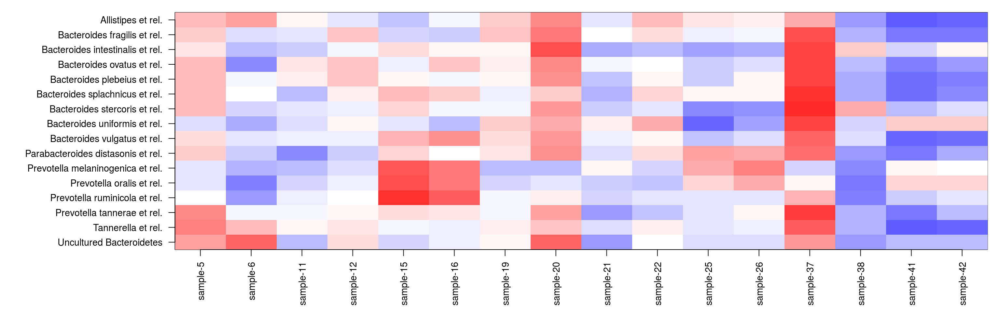
Find visually appealing order for rows and columns with the Neatmap approach:
# Sort the matrix rows and cols directly
xo <- neat(x, method = "NMDS", distance = "euclidean") # Sorted matrix
tmp <- plot_matrix(xo, type = "twoway", mar = c(5, 12, 1, 1))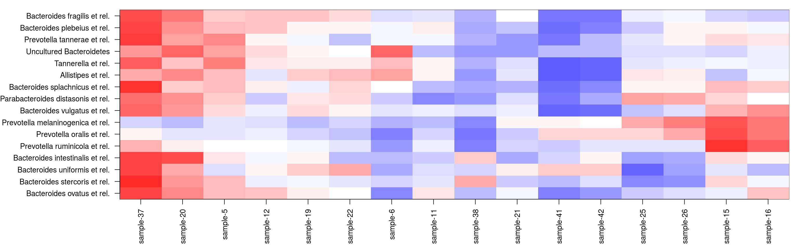
# or use a shortcut to sorting rows (or columns) if just the order was needed
sorted.rows <- neatsort(x, "rows", method = "NMDS", distance = "euclidean") Cross-correlating data sets
Cross-correlate columns of two data sets from related to microbiome and blood serum lipids associations (PeerJ 1:e32).
The function returns correlations, raw p-values, and fdr estimates (not strictly proper as the comparisons are not independent). Here robust biweight midcorrelation (‘bicor’) from the WGCNA package. Keep only those elements that have at least only one significant correlation (n.signif):
# Load example data
otu <- peerj32$microbes
lipids <- peerj32$lipids
# Define data sets to cross-correlate
x <- log10(otu) # OTU Log10 (44 samples x 130 genera)
y <- as.matrix(lipids) # Lipids (44 samples x 389 lipids)
# Cross correlate data sets
correlations <- associate(x, y, method = "bicor", mode = "matrix", p.adj.threshold = 0.05, n.signif = 1)
# Or, alternatively, the same output is also available in a handy table format
correlation.table <- associate(x, y, method = "bicor", mode = "table", p.adj.threshold = 0.05, n.signif = 1)
kable(head(correlation.table))| X1 | X2 | Correlation | p.adj | |
|---|---|---|---|---|
| 833 | Ruminococcus gnavus et rel. | TG(54:5).2 | 0.7207818 | 0.0017385 |
| 547 | Ruminococcus gnavus et rel. | TG(52:5) | 0.6996301 | 0.0031929 |
| 141 | Eubacterium cylindroides et rel. | PC(40:3) | -0.6771286 | 0.0038006 |
| 144 | Helicobacter | PC(40:3) | -0.6838424 | 0.0038006 |
| 437 | Ruminococcus gnavus et rel. | TG(50:4) | 0.6852226 | 0.0038006 |
| 525 | Ruminococcus gnavus et rel. | TG(52:4).1 | 0.6716223 | 0.0038006 |
Association heatmaps
Rearrange the data and plot the heatmap and mark significant correlations with stars to reproduce microbiota-lipidome heatmap from Lahti et al. PeerJ (2013) (the ordering of rows and columns may be different):
p <- heat(correlation.table, "X1", "X2", fill = "Correlation", star = "p.adj", p.adj.threshold = 0.05) print(p)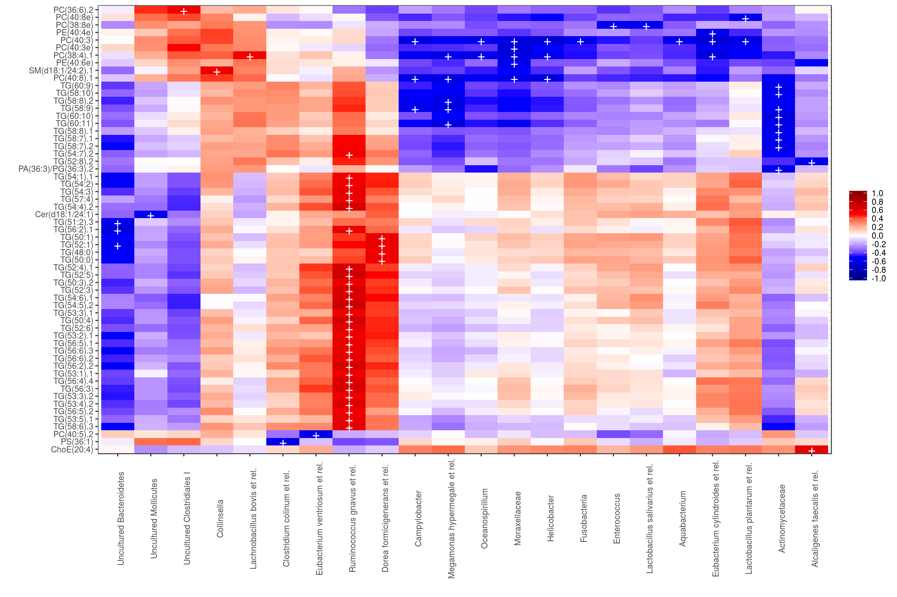
Heatmaps with ggplot2
The above examples provide handy shortcuts for heatmap visualization. You can also directly modify the ggplot2 routines. This time, let us set q-value threshold also for cell coloring:
# Order the rows and columns with levels argument if needed:
correlation.table$X1 <- factor(correlation.table$X1, levels = unique(as.character(correlation.table$X1)))
correlation.table$X2 <- factor(correlation.table$X2, levels = unique(as.character(correlation.table$X2)))
# Set black-and-white theme
library(ggplot2)
theme_set(theme_bw())
# Pick only the correlations with q<0.05
# Note: this will leave other cells empty
library(dplyr)
subtable <- filter(correlation.table, p.adj < 0.05)
# Arrange the figure
p <- ggplot(subtable, aes(x = X1, y = X2, fill = Correlation))
p <- p + geom_tile()
p <- p + scale_fill_gradientn("Correlation",
breaks = seq(from = -1, to = 1, by = 0.2),
colours = c("darkblue", "blue", "white", "red", "darkred"),
limits = c(-1,1))
# Polish texts
p <- p + theme(axis.text.x=element_text(angle = 90))
p <- p + xlab("") + ylab("")
# Mark the most significant cells with stars
p <- p + geom_text(data = subset(correlation.table, p.adj < 0.02),
aes(x = X1, y = X2, label = "+"), col = "white", size = 5)
# Plot
print(p)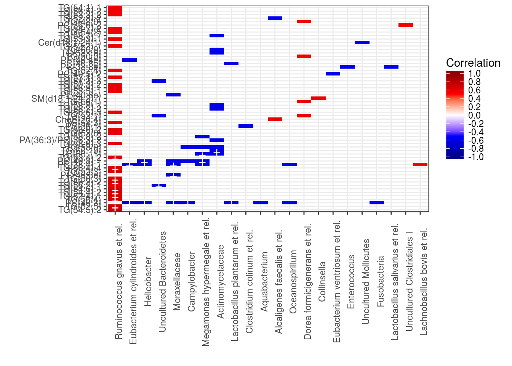
Heatmap with text
For detailed information, might be handy to print the actual values on top of the heatmap:
theme_set(theme_bw(20))
df <- correlation.table
p <- ggplot(df, aes(X1, X2, group=X2))
p <- p + geom_tile(aes(fill = Correlation))
p <- p + geom_text(aes(fill = df$Correlation, label = round(df$Correlation, 1)), size = 2)
p <- p + scale_fill_gradientn("Correlation",
breaks = seq(from = -1, to = 1, by = 0.25),
colours = c("blue", "white", "red"),
limits = c(-1, 1))
p <- p + theme(axis.text.x = element_text(angle = 90, vjust = 0.5))
p <- p + xlab("") + ylab("")
print(p)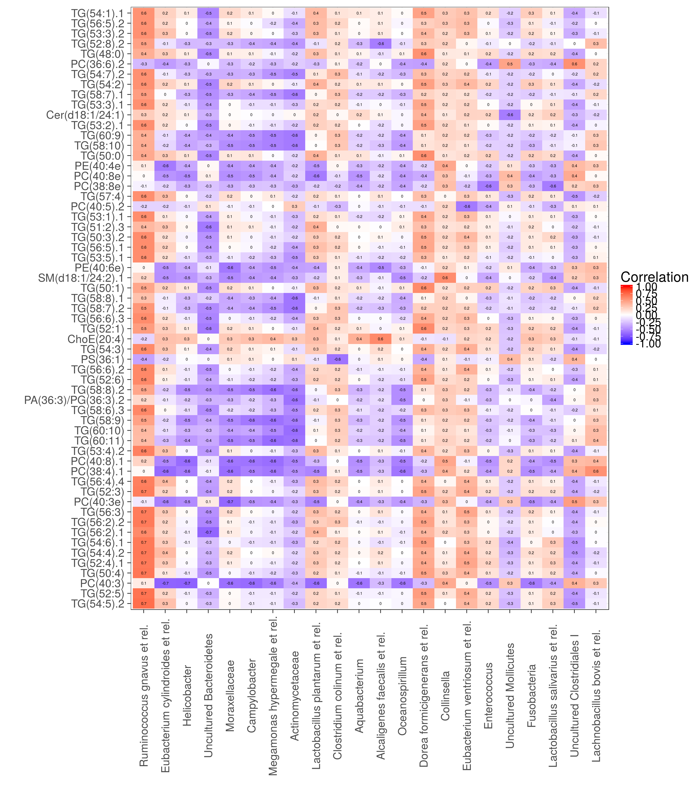
ggcorr
An alternative way to visualize correlation matrices is provided by the ggcorr package. Note: this toy example does not consider the compositionality effect in microbial abundance correlations. See the package site for more detailed examples and many more options.
library(GGally)
ggcorr(x[, 1:10], method = c("pairwise", "spearman"), nbreaks = 20, hjust = 0.75)
ggcorr(x[, 1:10], method = c("pairwise", "spearman"), nbreaks = 20, geom = "circle")
ggcorr(x[, 1:10], method = c("pairwise", "spearman"), nbreaks = 20, label = TRUE, label_alpha = TRUE)
ggcorr(data = NULL, cor_matrix = cor(x[, 1:10], use = "everything"), low = "steelblue", mid = "white", high = "darkred", midpoint = 0) 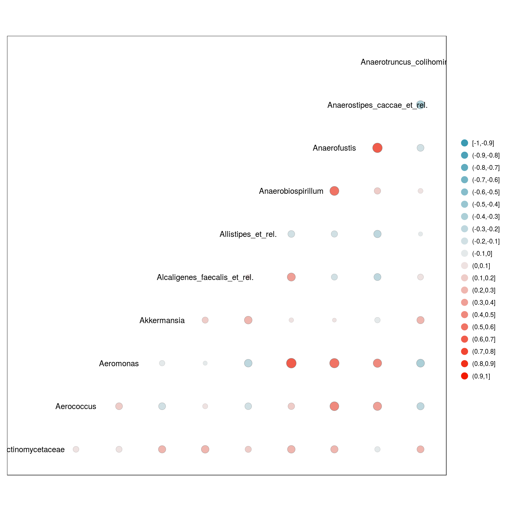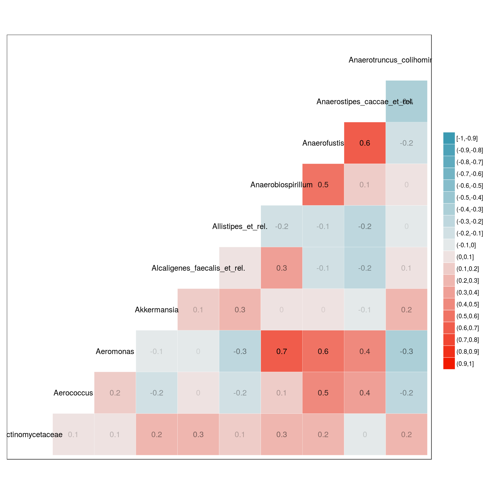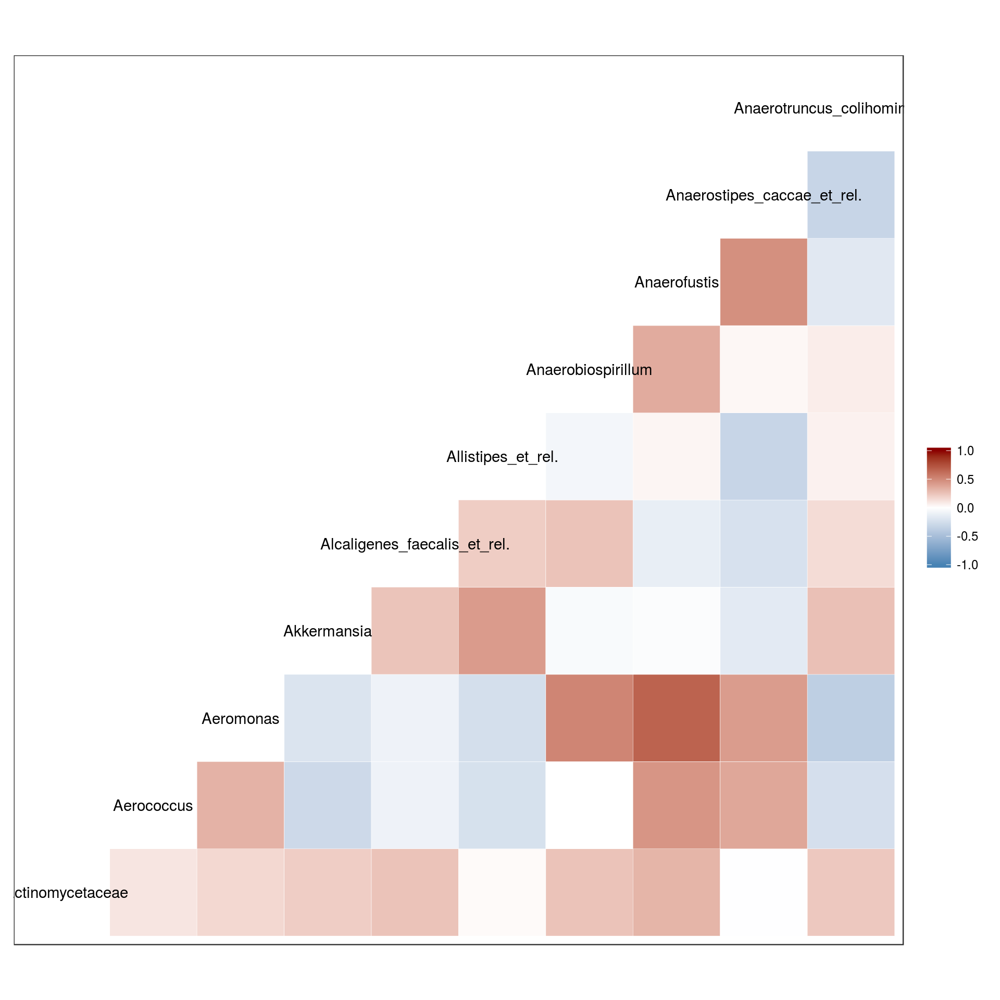
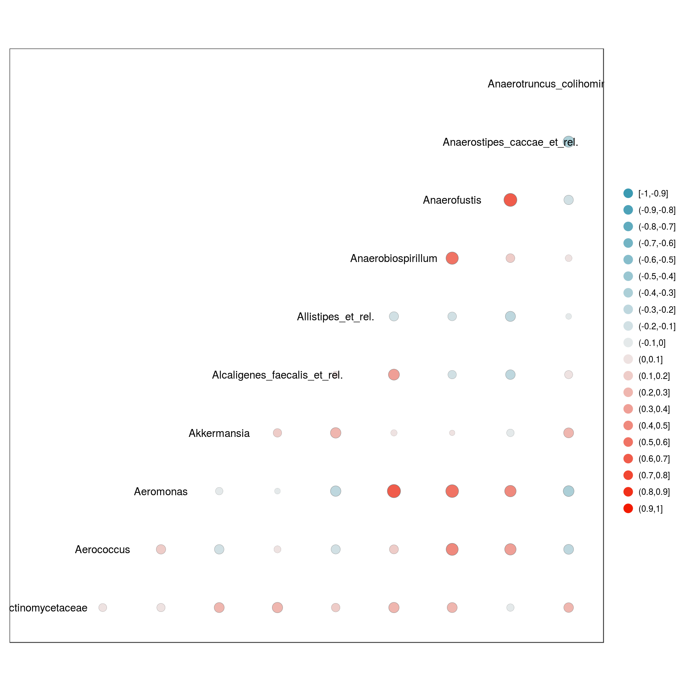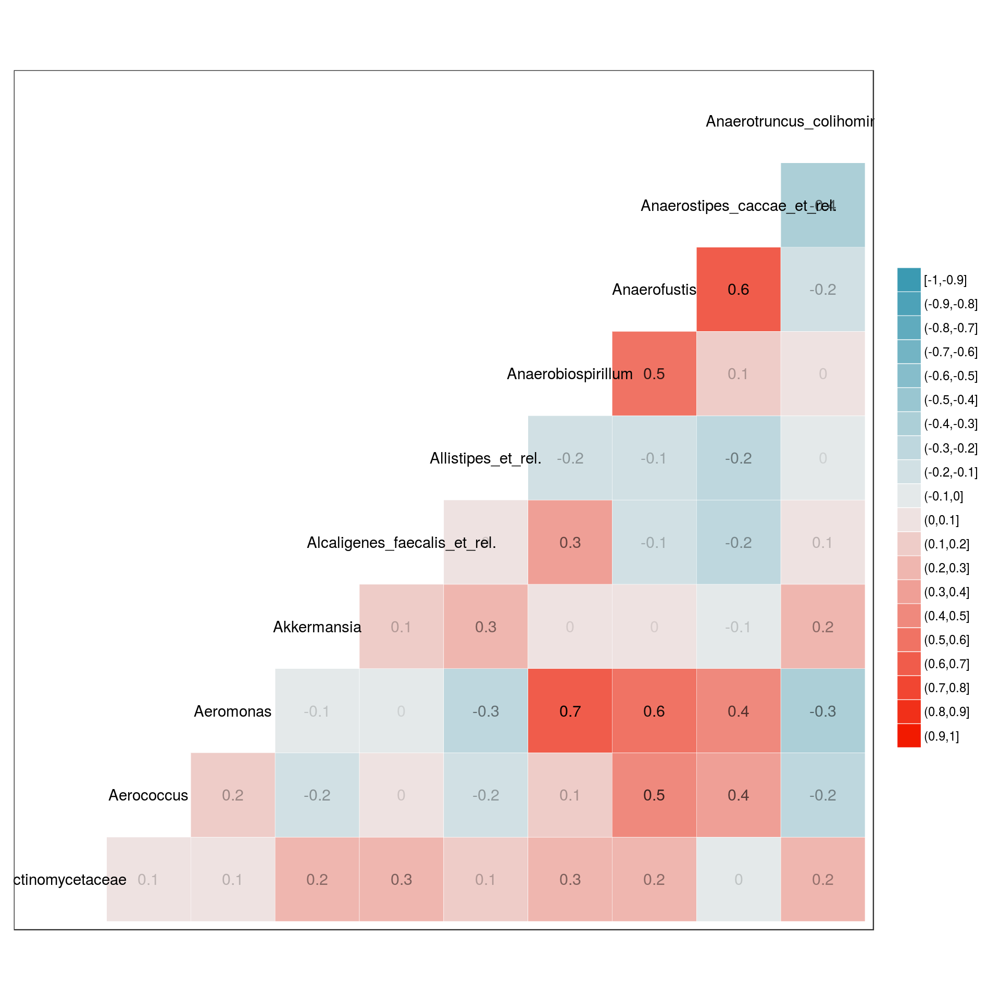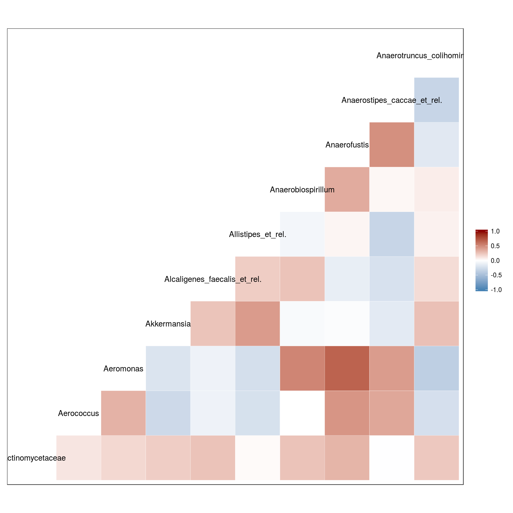